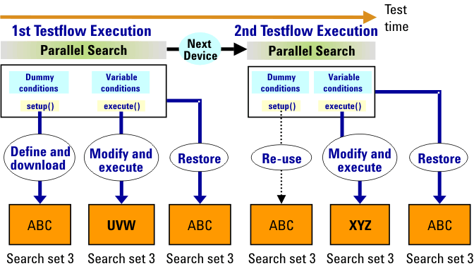

Managing Search Conditions with Variables
Search conditions can be defined by using variables. If a testflow containing such a variable dependent parallel search is repeated in a loop, then the values of the variables may be different for each execution of the search. In this case a new search set would be created with each testflow execution, and the testflow would fall back on using only one search set after 126 loop repetitions.
To avoid such a search set overflow, the SEARCH_FUNC_TASK API provides a restore mechanism for class objects that (try to) download more than one collection of search conditions. The first of these definitions is considered as the original. A new search set will be created for this definition, unless a set with exactly these conditions already exists. The following definitions are regarded as temporary modifications. They will be written into the same search set that holds the conditions of the first definition (and expand or override the original). But after termination of the test method, the modifications will be canceled. Thus the search set will contain the original definition again at the next testflow execution.
With this restore mechanism, you can solve the problem of variable dependent search conditions. Namely, you must first define a variable-free dummy search condition, and subsequently overwrite this original definition with the genuine conditions that depend on variables. Since the original conditions are restored, the API class object will find a search set containing exactly the dummy conditions at the next test execution, and will therefore reuse this set for the following variable dependent modifications.
Since the dummy search condition only serves to enable reuse of the search set, it must be downloaded, but not be executed. This is achieved by using the setup() member function of the SEARCH_FUNC_TASK API. setup() downloads the preceding search conditions into a new search set if no set with exactly these conditions exists, but it does not execute the search.
Thus a parallel search with variables should be coded according to the following schema:
- Define a dummy search condition without variables.
- Apply the setup() member function of the SEARCH_FUNC_TASK API to download the conditions.
- Modify the search conditions using variables as required.
- Apply the execute() member function of the SEARCH_FUNC_TASK API to download the modifications and execute the search.
The following figure illustrates the principle:
